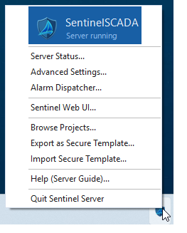
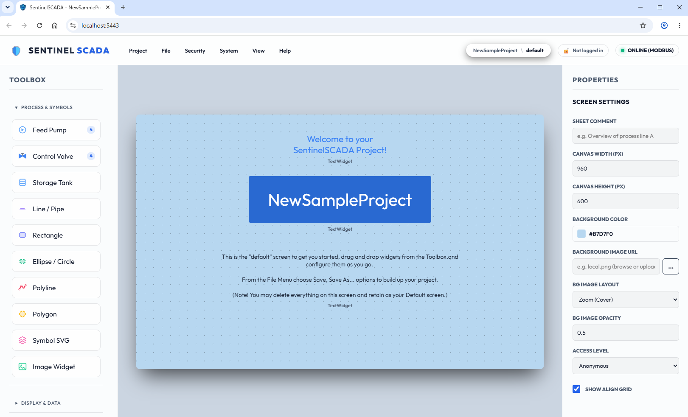
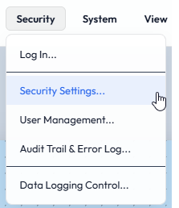
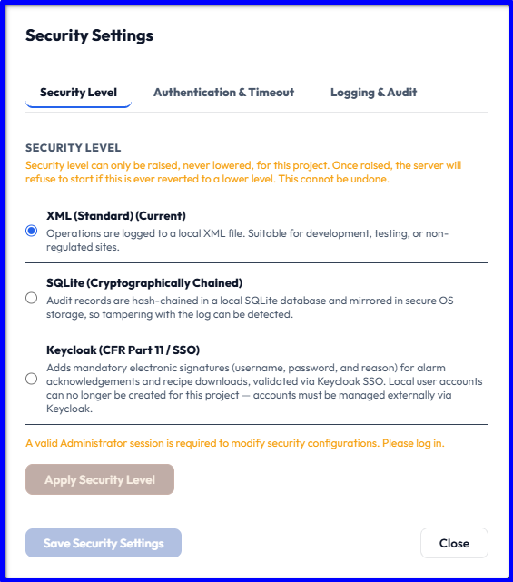
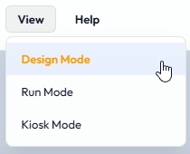
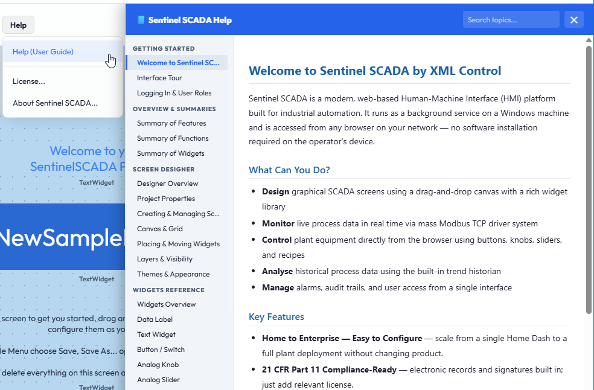
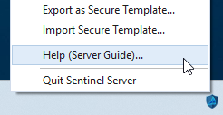
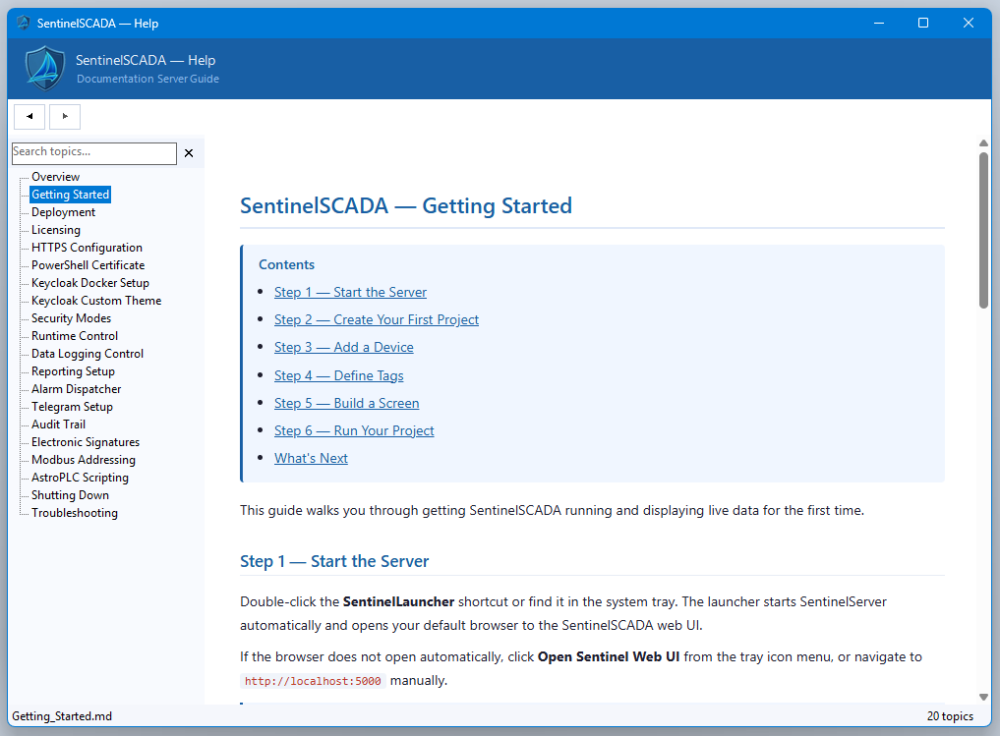

Goal
Understand what SentinelSCADA is, how its two parts fit together, the security and display modes you will meet, and where to find help.
A short read, and nothing to install or prepare.
SentinelSCADA is a web-server based SCADA/HMI solution built with simplicity in mind. It has the tools and features you would expect from a professional-grade SCADA application: screens, buttons, switches, animations, device drivers, tag-based data from real and simulated PLCs, a logic scripting tool (AstroPLC), alarms, a data historian, audit trailing, robust security and more. It is all laid out in a simple, and we hope intuitive, format that is a pleasure to use at every level of need, from home automation to production and industrial installations.
Important SentinelSCADA is a single-server installation. If you need fail-over and total redundancy for a highly critical application, please investigate the many excellent, well-established offerings in the automation space.
System architecture
The application has two parts: an ASP.NET web server back end running as a Windows Service on the host PC, and a browser-based front end, where all design and rendering take place. That can be a single local browser, or many clients connected over your LAN.
The two parts have very distinct purposes. The server side, and all of its configuration, is reached from a tray icon.

The server tray icon menu.
The client side, meaning interface design and the per-project configuration, is all reached from your primary web browser: the one running on the server PC itself.

The web client, here at the start of a new project.
Every project has access control in the form of user accounts with roles such as Admin, Engineer and Guest. These roles are what permit design and configuration, the selective use of buttons and switches, and even whether the server may be switched to a different project, which is then loaded and served instead.
Security modes
The next most important idea is the security model, for both the server and its clients. SentinelSCADA has three modes of operational security. They are set per project, from the web client under Security > Security Settings…

XML mode — a simple text-based model for non-critical, already physically secured, or home use.
SQLite mode — a step up. All user data, historian logs and so on are held in a relational database, with full encryption, tamper detection and audit trails.
Keycloak mode — the top tier: secure single sign-on, full encryption, HTTPS, and everything needed for Title 21 CFR Part 11 readiness, as our documentation sets out. With Keycloak, SentinelSCADA does no authentication of its own; the Keycloak server handles all of it. That server may be cloud-based or, for on-premise convenience, run in a Docker container. A later chapter demonstrates such a setup.

Display modes
The SCADA interface has three basic display modes, and each has a profound effect on both the server and the client experience.

Design Mode — fully design and configure your project: screens, widgets, drivers, tags, alarms and so on. Any connected client sees a banner such as “System in Design Mode” so it is clear what state the system is in. Live and dummy tag data keep updating as you work.
Run Mode — all the live working features become active: users logging in and out, data logging, and direct access to connected devices such as PLCs for binary and value commands and adjustments. The whole system is live. Connected clients see live screens and, according to their access rights, can adjust real-world values.
Kiosk Mode — the mode intended for real-world use, including public spaces. All the design mechanisms are hidden and users get the pure interface as you intended it. They can navigate by the jump buttons and links you provided, watch trend charts, and see the alarm history and the active and acknowledged alarms. Users can still log in and out, using dedicated on-screen widgets, to gain access to controls. Alternatively, screens can also be auto-selected by a Tag value, or even rotated on a timed interval — requiring no intervention.
Good to know A project can be set to start straight into Kiosk Mode, and to require a user with Admin or Engineer status to leave it. That is one of the many options and settings available.
Getting help
As well as these tutorials, each part of the system has its own help. From the web client, choose Help (User Guide). It is a thorough reference and is fully searchable.

For the server service, choose Help (Server Guide) from the tray icon.

It covers several important topics, including a Getting Started guide, alarm management with Telegram, Keycloak Docker setup and more, and it can also be searched by keyword.

Summary
SentinelSCADA has a server (a Windows Service, managed from the tray icon) and a web client (where you design and run).
Security is set per project: XML, SQLite or Keycloak.
There are three display modes: Design, Run and Kiosk.
Help is in two places: Help (User Guide) in the client and Help (Server Guide) on the tray icon.
That is a brief introduction to what SentinelSCADA is, some basic concepts, and how to find help. In the following chapters we will walk through setting up a project and touch on the most important aspects of getting from design to real-world application.